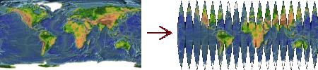

This program is part of Netpbm.
ppmglobe does the inverse of a cylindrical projection of a sphere. Starting with a cylindrical projection, it produces an image you can cut up and glue onto a sphere to obtain the spherical image of which it is the cylindrical projection.
What is a cylindrical projection? Imagine a map of the Earth on flat paper. There are lots of different ways cartographers show the three dimensional information in such a two dimensional map. The cylindrical projection is one. You could make a cylindrical projection by putting a light inside a globe and wrapping a rectangular sheet of paper around the globe, touching the globe at the Equator. Then trace the image that the light projects onto the paper. Lay the paper out flat and you have a cylindrical projection.
Here's where ppmglobe comes in: Pass the image on that paper through ppmglobe and what comes out the other side looks something like this:

You could cut out the strips and glue it onto a sphere and you'd have a copy of the original globe.
Note that cylindrical projections are not what you normally see as maps of the Earth. You're more likely to see a Mercator projection. In the Mercator projection, the Earth gets stretched North-South as well as East-West as you move away from the Equator. It was invented for use in navigation, because you can draw straight compass courses on it, but is used to day because it is pretty.
You can find maps of planets at maps.jpl.nasa.gov.
stripcount is the number of strips ppmglobe is to generate in the output. More strips makes it easier to fit onto a sphere (less stretching, tearing, and crumpling of paper), but makes you do more cutting out of the strips.
ppmglobe was new in Netpbm 10.16 (June 2003).
It is derived from Max Gensthaler's ppmglobemap.
Max Gensthaler wrote a program he called ppmglobemap in June 2003 and suggested it for inclusion in Netpbm. Bryan Henderson modified the code slightly and included it in Netpbm as ppmglobe.